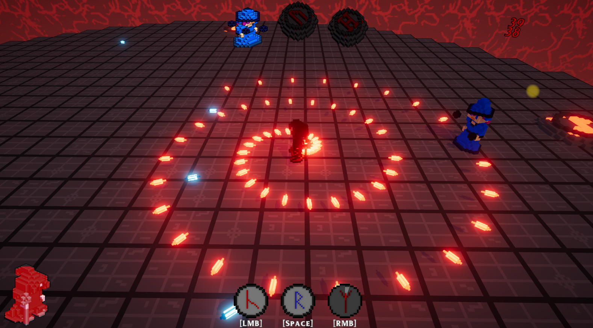

Game / Ludum Dare 55
Runic Summoner
Charge three runes while increasingly powerful bosses are summoned.

About the game
You play as a dark mage tasked with charging three runes. Each completed rune summons a more powerful boss. Can you finish all three and unleash Jorund, the Molten Sear?